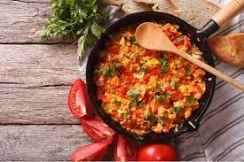
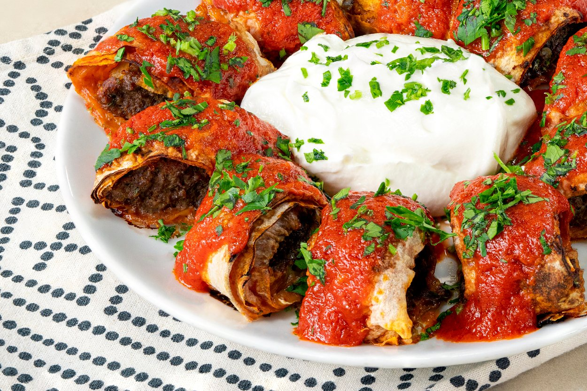

Follow what the page shows you, and a new world full of flavour will show itself to you..."
First off the best breakfast dish ever created, menemen. A typical Turkish dish made out of egg, tomato, green onions and anything you can fantasize about having in it. I'll show you the way to a new world
It's late in the afternoon or it's already evening. You need a filling dish filled with meat. Here you go

I don't think I need to tell you anything. Look at it. What more do you want?